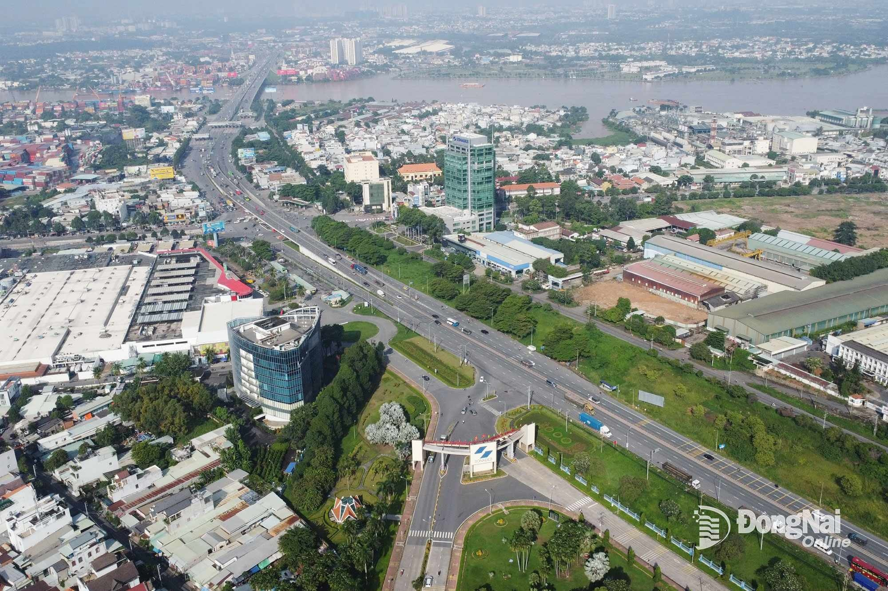
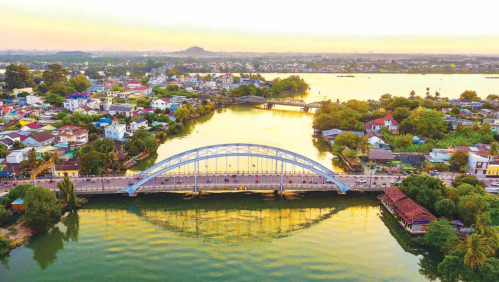
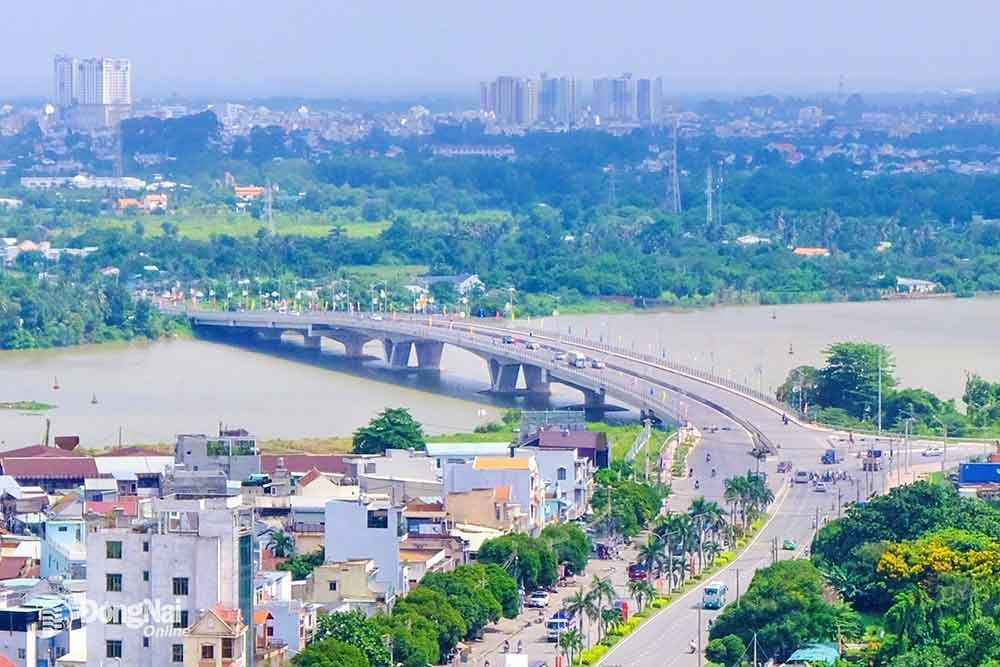

Một bài viết ngắn tình cảm chào mừng bạn ghé thăm vùng đất hơn 300 năm hình thành và phát triển.



Tổng quan về vùng đất "Gia Định xưa"
-Vị trí chiến lược: Đồng Nai nằm ở cửa ngõ của vùng kinh tế trọng điểm phía Nam, là nút giao thông huyết mạch kết nối Đông Nam Bộ, Nam Trung Bộ và Tây Nguyên.
-Lịch sử hình thành: Năm 1698, Thống suất Nguyễn Hữu Cảnh kinh lược đất phương Nam, xác lập chủ quyền, thành lập dinh Trấn Biên (chính là vùng đất Đồng Nai ngày nay). Đây là một trong những cái nôi của nền văn minh lúa nước và văn hóa miệt vườn Nam Bộ với hơn 300 năm hình thành và phát triển